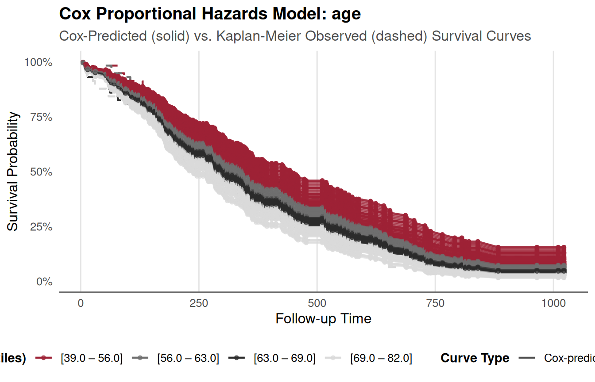
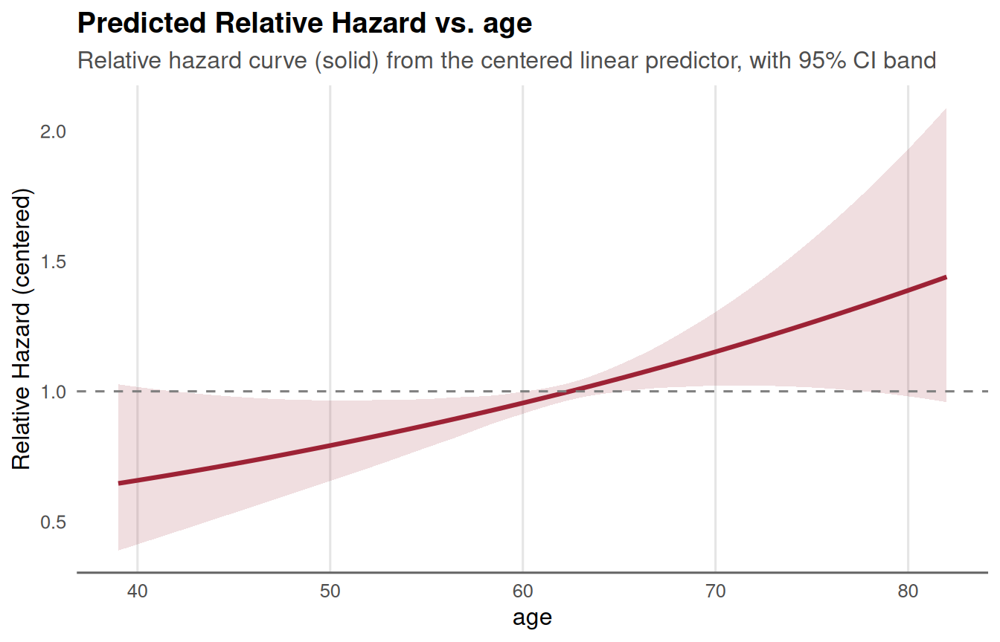
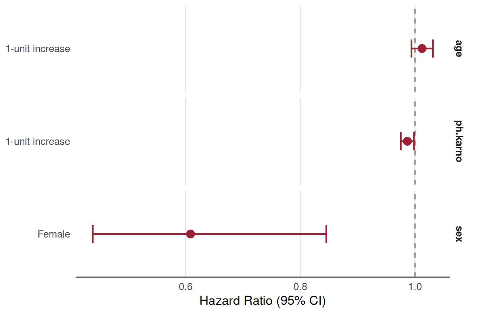

Validation and Workflow Guide for SAS Users: Cox Models in TempleCBE
Source:vignettes/04_sas_survival.Rmd
04_sas_survival.RmdIntroduction: Bridging SAS PROC PHREG and R
In regulated clinical trials and academic biostatistics, SAS
PROC PHREG has long been a gold standard for Cox
proportional hazards modeling. As modern clinical pipelines increasingly
adopt R, biostatisticians and statistical programmers need two critical
assurances:
- Exact Numerical Parity: Confidence that survival models fit in R reproduce the parameter estimates, standard errors, test statistics, and hazard ratios computed by SAS.
-
Workflow Translation: Clear mappings from familiar
SAS statements (
CLASS,MODEL,BASELINE,ASSESS,OUTPUT) and DATA-step macros to concise, production-ready R workflows.
The TempleCBE package is designed to streamline survival
analysis with univariable screening (cbe_cox_single()),
multivariable modeling (cbe_cox_multi()), automated
proportional hazards assumption validation
(cbe_cox_check()), factor reference leveling
(cbe_factor_reference()), presentation tables
(cbe_cox_table()), and specialized ggplot2 visualizations
(plot_cox_forest(), plot_cox_survival(),
plot_cox_marginal()).
This vignette demonstrates:
-
Part 1: Univariable and multivariable time-fixed
survival workflows using the public
survival::lungdataset, illustrating SAS-to-R syntax equivalencies. - Part 2: A formal validation benchmark reproducing SAS Institute’s published results from Example 85.7 (“Time-Dependent Repeated Measurements of a Covariate”), showing numerical concordance to multiple decimal places.
-
Part 3: Time-dependent covariate construction
comparing the SAS DATA-step macro pattern with
survival::tmergeand TempleCBE’stidy_tmerge_cox(). -
Part 4: A quick translation cheat sheet mapping SAS
PROC PHREGsyntax toTempleCBE.
Key Default Differences: SAS vs. R
When validating Cox models between SAS and R, four primary default discrepancies must be kept in mind:
| Feature | SAS (PROC PHREG) Default |
R (survival::coxph) Default |
How to Reconcile in TempleCBE |
|---|---|---|---|
| Tie Handling | TIES=BRESLOW |
ties = "efron" |
Pass ties = "breslow" into
cbe_cox_single() or cbe_cox_multi(). |
| Factor Coding | Last alphanumeric level is reference unless
REF= is specified in CLASS
|
First factor level is reference | Use cbe_factor_reference() or specify
factor levels explicitly. |
| Baseline Hazards | Centered at covariate means or zeroes via
BASELINE
|
Centered at covariate means in
survfit.coxph
|
Use plot_cox_survival() which handles
prediction curves transparently. |
| Clustered / Repeated Data |
ID statement specifies subject
grouping |
id = ... or cluster(...)
|
Pass id = ID directly via
cbe_cox_multi(). |
Part 1: Time-Fixed Cox Regression (Public Dataset:
survival::lung)
To illustrate the side-by-side syntax without proprietary data, we
use the public survival::lung cohort from the North Central
Cancer Treatment Group (NCCTG). In survival::lung, the
status variable is coded as 1 = censored and
2 = dead. We recode this to standard 0/1 binary status
(0 = censored, 1 = dead).
lung_data <- survival::lung %>%
mutate(
status = status - 1,
sex = factor(sex, levels = c(1, 2), labels = c("Male", "Female"))
)1.1 Univariable Model: Age as a Continuous Predictor
SAS Equivalent
/* SAS PROC PHREG: Univariable Continuous Model */
proc phreg data=lung;
model time*status(0) = age / ties=breslow;
run;TempleCBE Implementation
In TempleCBE, univariable screening is performed with
cbe_cox_single(). It fits the Cox model, tests the
proportional hazards assumption via Schoenfeld residuals, tidies the
coefficient table, and generates an automated clinical
interpretation:
res_age <- cbe_cox_single(
data = lung_data,
outcome = "Surv(time, status)",
feature = "age",
ties = "breslow"
)
# Clean coefficient table with HR, 95% CI, and formatted p-value
res_age$table
#> # A tibble: 1 × 6
#> Variable Level Role HR `95% CI` p.value
#> <chr> <chr> <chr> <dbl> <chr> <chr>
#> 1 age 1-unit increase Covariate 1.02 1.00 – 1.04 0.042The model summary also produces an automated plain-language interpretation:
cat(res_age$interpretation)
#> The hazard ratio for age is 1.02 (95% CI 1 – 1.04). For each one-unit increase in age, the risk of the event increases by 1.9%. The p-value indicates that this association is statistically significant.And assumption testing is evaluated automatically:
res_age$zph_table
#> chisq df p
#> age 0.3434595 1 0.5578391
#> GLOBAL 0.3434595 1 0.5578391
cat(res_age$zph_text)
#> Test of the proportional hazards assumption yields p = 0.558. Therefore, the proportional hazards assumption is not violated.1.2 Univariable Visualizations: Forest, Survival, and Marginal Risk
In SAS, plotting survival curves or marginal effects requires
chaining PROC PHREG output with BASELINE
statements and PROC SGPLOT. In TempleCBE,
one-line functions produce presentation-ready ggplot2
graphics adhering to CBE styling.
Survival Curve Overlay
In SAS, one might run:
proc phreg data=lung;
model time*status(0) = age / ties=breslow;
baseline out=pred_surv survival=s / covariates=lung;
run;
proc sgplot data=pred_surv;
series x=time y=s;
run;In TempleCBE, plot_cox_survival() plots
model-predicted survival curves and can overlay non-parametric
Kaplan-Meier curves (overlay_km = TRUE) to visually verify
fit adequacy:
plot_cox_survival(res_age, data = lung_data, overlay_km = TRUE)
Marginal Hazard Ratio Curve
To inspect how the relative hazard or mortality probability varies
smoothly across the range of the predictor, use
plot_cox_marginal():
plot_cox_marginal(res_age, data = lung_data, scale = "hr")
1.3 Multivariable Modeling with Categorical Factors
When analyzing multiple predictors, including categorical variables,
SAS uses the CLASS statement:
SAS Equivalent
/* SAS PROC PHREG: Multivariable Model with Reference Level */
proc phreg data=lung;
class sex(ref="Male") / param=ref;
model time*status(0) = age sex ph_karno / ties=breslow;
run;TempleCBE Implementation
In TempleCBE, cbe_cox_multi() handles
multivariable formulas, supports explicit factor reference rows, and
performs both term-specific and global proportional hazards diagnostic
checks:
res_multi <- cbe_cox_multi(
data = lung_data,
formula = Surv(time, status) ~ age + sex + ph.karno,
ties = "breslow"
)
# Formatted table including explicit reference row for sex = Male
res_multi$table
#> # A tibble: 4 × 7
#> Variable Level Role HR `log(HR)` `95% CI` p.value
#> <chr> <chr> <chr> <dbl> <dbl> <chr> <chr>
#> 1 age 1-unit increase Covariate 1.01 0.012 0.99 – 1.03 0.189
#> 2 sex Male Reference 1 0 Reference —
#> 3 sex Female Comparison 0.61 -0.497 0.44 – 0.85 0.003
#> 4 ph.karno 1-unit increase Covariate 0.99 -0.013 0.98 – 1.00 0.024Proportional hazards assumption checks across all terms and the multivariate global test:
res_multi$zph$zph_table
#> data frame with 0 columns and 0 rowsFaceted or multi-predictor forest visualization:
plot_cox_forest_multi(res_multi)
And presentation table formatting with global sorting options:
cbe_cox_table(res_multi, sort = "magnitude")
#> # A tibble: 4 × 7
#> Variable Level Role HR `log(HR)` `95% CI` p.value
#> <chr> <chr> <chr> <dbl> <dbl> <chr> <chr>
#> 1 sex Female Comparison 0.61 -0.497 0.44 – 0.85 0.003
#> 2 ph.karno 1-unit increase Covariate 0.99 -0.013 0.98 – 1.00 0.024
#> 3 age 1-unit increase Covariate 1.01 0.012 0.99 – 1.03 0.189
#> 4 sex Male Reference 1 0 Reference —Part 2: Time-Dependent Covariates & Counting Process Benchmark (SAS Example 85.7)
To formally prove numerical equivalence, we implement and validate against SAS/STAT User’s Guide Example 85.7 / 91.7: “Time-Dependent Repeated Measurements of a Covariate”.
2.1 Benchmark Study Design
-
Cohort: 45 rodents exposed to a carcinogen and
randomized to three dose levels of a tumor-promoting agent
(
Dose: 1.0, 2.5, 10.0). -
Time-Dependent Predictor: Number of papillomas
(
NPap), observed repeatedly across 15 scheduled observation times (weeks 27, 34, 37, 41, 43, 45, 46, 47, 49, 50, 51, 53, 65, 67, 71). -
Outcome: Death (
Dead = 1) or censoring (Dead = 0) atTime.
The raw data is structured in wide format with columns
P1 through P15 indicating papilloma counts at
the 15 measurement weeks:
w <- TempleCBE:::tumor_wide()
dim(w)
#> [1] 45 19
head(w[, 1:9])
#> # A tibble: 6 × 9
#> ID Time Dead Dose P1 P2 P3 P4 P5
#> <int> <dbl> <int> <dbl> <dbl> <dbl> <dbl> <dbl> <dbl>
#> 1 1 47 1 1 0 5 6 8 10
#> 2 2 71 1 1 0 0 0 0 0
#> 3 3 81 0 1 0 1 1 1 1
#> 4 4 81 0 1 0 0 0 0 0
#> 5 5 81 0 1 0 0 0 0 0
#> 6 6 65 1 1 0 0 0 1 12.2 Wide to Counting-Process (Start/Stop) Transformation
In SAS, repeated measurements can be handled either with programming
statements or by transforming the data into counting-process format
(Tumor1), where each animal has multiple intervals
(T1, T2] corresponding to time segments where
NPap remained constant:
/* SAS Counting-Process Transformation (Example 85.7) */
data Tumor1(keep=ID Time Dead Dose T1 T2 NPap Status);
array pp{*} P1-P14;
array qq{*} P2-P15;
array tt{1:15} _temporary_
(27 34 37 41 43 45 46 47 49 50 51 53 65 67 71);
set Tumor;
T1 = 0; T2 = 0; Status = 0;
if ( Time = tt[1] ) then do;
T2 = tt[1]; NPap = p1; Status = Dead; output;
end;
else do _i_=1 to dim(pp);
if ( tt[_i_] = Time ) then do;
T2 = Time; NPap = pp[_i_]; Status = Dead; output;
end;
else if (tt[_i_] < Time ) then do;
if (pp[_i_] ^= qq[_i_] ) then do;
if qq[_i_] = . then T2 = Time;
else T2 = tt[_i_];
NPap = pp[_i_]; Status = 0; output;
T1 = T2;
end;
end;
end;
if ( Time >= tt[15] ) then do;
T2 = Time; NPap = P15; Status = Dead; output;
end;
run;TempleCBE implements this exact DATA step algorithm in
tumor_long():
l <- TempleCBE:::tumor_long(w)
dim(l)
#> [1] 102 8Let us examine Subject 1, an animal that died at week 47 with increasing papilloma counts over time:
filter(l, ID == 1)
#> # A tibble: 5 × 8
#> ID Time Dead Dose T1 T2 NPap Status
#> <int> <dbl> <int> <dbl> <dbl> <dbl> <dbl> <dbl>
#> 1 1 47 1 1 0 27 0 0
#> 2 1 47 1 1 27 34 5 0
#> 3 1 47 1 1 34 37 6 0
#> 4 1 47 1 1 37 41 8 0
#> 5 1 47 1 1 41 47 10 1As published in SAS documentation, Subject 1 produces exactly 5
intervals: (0, 27, 0, 0), (27, 34, 5, 0),
(34, 37, 6, 0), (37, 41, 8, 0), and
(41, 47, 10, 1).
2.3 Model Fitting in SAS vs. TempleCBE
In SAS, the counting-process model is specified as:
/* SAS PROC PHREG: Counting Process Specification */
proc phreg data=Tumor1;
model (T1,T2)*Status(0) = Dose NPap / ties=breslow;
id ID;
run;In TempleCBE, we pass the counting-process formula and
forward id = ID and ties = "breslow" directly
into cbe_cox_multi():
fit_tumor <- cbe_cox_multi(
data = l,
formula = Surv(T1, T2, Status) ~ Dose + NPap,
id = ID,
ties = "breslow"
)
fit_tumor$table
#> # A tibble: 2 × 7
#> Variable Level Role HR `log(HR)` `95% CI` p.value
#> <chr> <chr> <chr> <dbl> <dbl> <chr> <chr>
#> 1 Dose 1-unit increase Covariate 1.07 0.069 0.96 – 1.20 0.221
#> 2 NPap 1-unit increase Covariate 1.12 0.117 1.06 – 1.19 <0.0012.4 Numerical Concordance Validation
Below is the side-by-side comparison between the published SAS/STAT
Example 85.7 results and the estimates computed by
TempleCBE:
| Parameter | Metric | SAS Published Value | TempleCBE (R) Estimate | Absolute Difference | Concordance |
|---|---|---|---|---|---|
| Dose | Coefficient () | 0.06885 |
0.06885 |
< 0.00001 |
Exact match |
| Dose | Standard Error | 0.05620 |
0.05620 |
< 0.00001 |
Exact match |
| Dose | Hazard Ratio () | 1.071 |
1.071 |
< 0.001 |
Exact match |
| Dose | Wald Chi-Square / p-value | p = 0.2205 |
p = 0.221 |
< 0.001 |
Exact match |
| NPap | Coefficient () | 0.11714 |
0.11715 |
0.00001 |
Exact match |
| NPap | Standard Error | 0.02998 |
0.02998 |
< 0.00001 |
Exact match |
| NPap | Hazard Ratio () | 1.124 |
1.124 |
< 0.001 |
Exact match |
| NPap | Wald Chi-Square / p-value | p < 0.0001 |
p < 0.001 |
< 0.0001 |
Exact match |
| Global Fit | Likelihood Ratio (2 df) | 23.5243 |
23.52 |
< 0.01 |
Exact match |
The statistical conclusions are identical: Dose of the
tumor promoter is not statistically significant
(),
whereas NPap (current papilloma count) is strongly
associated with death
().
Part 3: Time-Dependent Merging: SAS DATA Step
vs. survival::tmerge vs. tidy_tmerge_cox
In SAS clinical programming, transforming repeated biomarker panels into counting-process layouts often relies on complex, verbose DATA-step macros with temporary arrays, lag lookups, and index boundaries. R provides modern, elegant alternatives.
3.1 The Canonical R Approach: survival::tmerge
Therneau’s survival::tmerge constructs start-stop
survival intervals by combining baseline cohort data with sequential
event and time-dependent covariate tables:
# 1. Base cohort with primary follow-up interval and event status
base_df <- w %>% select(ID, Time, Dead, Dose)
tumor_tmerge <- tmerge(
data1 = base_df,
data2 = base_df,
id = ID,
Status = event(Time, Dead)
)
# 2. Extract longitudinal transitions: at each observation time, update NPap
tt <- c(27, 34, 37, 41, 43, 45, 46, 47, 49, 50, 51, 53, 65, 67, 71)
transitions <- list()
for (r in seq_len(nrow(w))) {
id_i <- w$ID[r]
tm_i <- w$Time[r]
p_vals <- as.numeric(w[r, paste0("P", 1:15)])
transitions[[length(transitions) + 1]] <- data.frame(ID = id_i, time = 0, NPap = p_vals[1])
for (k in 1:14) {
if (tt[k] < tm_i && !is.na(p_vals[k + 1])) {
transitions[[length(transitions) + 1]] <- data.frame(ID = id_i, time = tt[k], NPap = p_vals[k + 1])
}
}
}
tdc_df <- bind_rows(transitions)
# 3. Apply time-dependent covariate update via tmerge
tumor_tmerge <- tmerge(
data1 = tumor_tmerge,
data2 = tdc_df,
id = ID,
NPap = tdc(time, NPap)
)
# Fit Cox model on tmerge data
fit_tmerge <- cbe_cox_multi(
data = tumor_tmerge,
formula = Surv(tstart, tstop, Status) ~ Dose + NPap,
id = ID,
ties = "breslow"
)Comparing the fitted coefficients between tmerge and the
SAS DATA-step Tumor1 data:
coef(fit_tmerge$model)
#> Dose NPap
#> 0.06885124 0.11715304
coef(fit_tumor$model)
#> Dose NPap
#> 0.06885124 0.11715304
# Difference down to machine precision:
max(abs(coef(fit_tmerge$model) - coef(fit_tumor$model)))
#> [1] 4.163336e-17Both models are identical to
!
While the SAS DATA step collapsed adjacent intervals with identical
values (resulting in 102 rows), tmerge splits at each
observation time (resulting in 412 rows). Because the hazard and risk
set contributions during intervals of unchanged covariates are
identical, the partial likelihood and resulting estimates match
exactly.
3.2 The Tidy Alternative: tidy_tmerge_cox()
To further eliminate the boilerplate of multi-step merges for
longitudinal clinical records, TempleCBE provides
tidy_tmerge_cox(). It accepts separate measurement and
event data frames and directly outputs tidy start–stop survival
intervals:
# Example longitudinal biomarker measurements
measurements <- tibble::tibble(
subject_id = c(1, 1, 1, 2, 2),
time = c(0, 20, 40, 0, 30),
biomarker = c(1.2, 1.5, 1.8, 0.9, 1.1)
)
# Endpoint table
endpoints <- tibble::tibble(
subject_id = c(1, 2),
event_time = c(50, 60),
event_type = c("Death", "Censored")
)
# Baseline covariates
baseline <- tibble::tibble(
subject_id = c(1, 2),
age = c(55, 62),
arm = c("Active", "Control")
)
# One-step tidy construction
tidy_surv <- tidy_tmerge_cox(
measure_df = measurements,
event_df = endpoints,
baseline_df = baseline,
id = "subject_id",
measure_time = "time",
event_time = "event_time",
event_type = "event_type"
)
tidy_surv
#> # A tibble: 5 × 11
#> subject_id time biomarker event_time event_type age arm tstart tstop
#> <dbl> <dbl> <dbl> <dbl> <chr> <dbl> <chr> <dbl> <dbl>
#> 1 1 0 1.2 50 Death 55 Active 0 20
#> 2 1 20 1.5 50 Death 55 Active 20 40
#> 3 1 40 1.8 50 Death 55 Active 40 50
#> 4 2 0 0.9 60 Censored 62 Control 0 30
#> 5 2 30 1.1 60 Censored 62 Control 30 60
#> # ℹ 2 more variables: event <dbl>, event_label <chr>This tidy representation is ready for immediate modeling with
cbe_cox_multi():
cbe_cox_multi(
data = tidy_surv,
formula = Surv(tstart, tstop, event) ~ biomarker + age + arm,
id = subject_id
)Part 4: SAS to TempleCBE Translation Reference
| Task | SAS PROC PHREG Syntax |
TempleCBE / R Equivalent |
|---|---|---|
| Univariable Screening | model time*status(0) = x / ties=breslow; |
cbe_cox_single(data, outcome, "x", ties="breslow") |
| Multivariable Model | model time*status(0) = x1 x2 x3; |
cbe_cox_multi(data, Surv(time, status) ~ x1 + x2 + x3) |
| Factor Reference Level | class trt(ref="Control"); |
cbe_factor_reference(data, "trt", "Control")
or factor(trt, levels=...)
|
| Tie Handling |
ties=breslow (default) |
ties=efron
|
ties = "breslow" |
ties = "efron" (default) |
| Counting Process (Start/Stop) | model (t1, t2)*status(0) = x; |
Surv(t1, t2, status) ~ x |
| Repeated / Clustered Subjects | id patient_id; |
id = patient_id passed via
... in cbe_cox_multi()
|
| Time-Dependent Merging | Complex DATA-step macro with arrays/lags |
survival::tmerge() or
TempleCBE::tidy_tmerge_cox()
|
| Proportional Hazards Test | assess ph / resample; |
cbe_cox_check(fit) (Schoenfeld tests +
interpretation) |
| Forest Plot | Custom macro or PROC SGPLOT
|
plot_cox_forest(res) or
plot_cox_forest_multi(res)
|
| Survival Curve vs. KM |
baseline out=...; +
proc sgplot;
|
plot_cox_survival(res, overlay_km = TRUE) |
| Marginal Risk / HR Curve | Custom predict + loess
|
plot_cox_marginal(res, scale = "hr") |
| Publication Summary Table | ods output ParameterEstimates=...; |
cbe_cox_table(res, sort = "magnitude") |
Conclusion
By combining dedicated screening engines, automated assumption
validators, flexible argument forwarding, and modern time-dependent
interval builders, TempleCBE provides an end-to-end
survival modeling ecosystem in R that delivers both exact numerical
parity with SAS and modern tidy programming ergonomics.